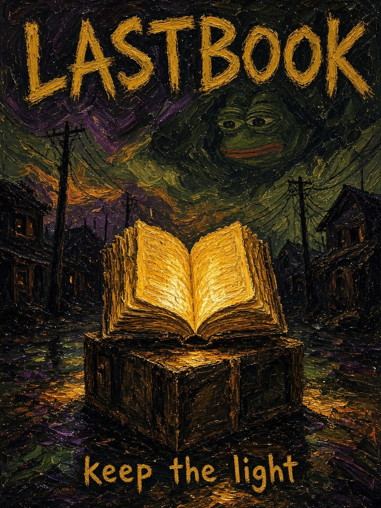

Lastbook
Shelf piece · 2026-11-17
Lastbook is a free, open-source app that puts a survival library on a computer so the guides, maps and videos are still there if the network isn’t. This shelf is how the studio hangs it for the public: a painting, a plain-language note, and the official links. We do not keep a copy of the app or its library here.
What it is
Lastbook runs on a Mac, Windows or Linux computer, not on a phone. You install it while you still have internet and power. Then you choose how big a library to keep on the machine: a small one of about 7.7 GB, a medium one of about 67.5 GB, or the full library of about 388 GB, plus an optional local map and an optional local AI. After that, reading, maps, videos and chat are meant to work offline.
The library is assembled from published guides, maps and videos, including work from sources such as Hesperian, the World Health Organization and the Red Cross. Each of those works travels under its own license, which is why this studio links out instead of republishing the files.
The app’s own original code is public on GitHub under the MIT License.
Official links
Use these doors, not a copy from anywhere else. If you install it, check the published SHA-256 on their checksum page against the file you actually received.
Download
Source code
Checksums
A note on care
Lastbook is not clinically reviewed, and it doesn’t replace trained care. In an emergency, call 911 if you can.
Safety check
Checked by the studio on November 17, 2026 (America/Toronto). I looked; I did not download, install or run the app.
The code is public under the MIT License at Immortal-Protocols/lastbook. The repository was created on November 12, 2026. When I checked it had 1,727 stars, 218 forks, 29 listed contributors (most commits from wonderdawg) and a homepage of lastbook.org. The GitHub organization Immortal-Protocols (also called A-LIST) has been public since July 28, 2025.
Version 1.1.11 is the current release on the official site and in the GitHub release notes (published November 17, 2026, 5:09 AM America/Toronto). The download names — Lastbook-1.1.11-mac.dmg, Lastbook-1.1.11-Setup.exe, Lastbook_1.1.11_amd64.deb and Lastbook_1.1.11_ubuntu26.04_amd64.deb — and their published SHA-256 checksums match across the GitHub release notes, the download page and SHA256SUMS.txt. Those files are served over HTTPS from downloads.lastbook.org, and a headers-only check showed file sizes that match what the site advertises (about 28.4 MB, 105 MB, 29.9 MB and 30.0 MB). The GitHub release itself does not attach the binaries; the official downloads live on that downloads host.
The website is served over HTTPS (Vercel), with a valid certificate and strict transport security. The domain lastbook.org was registered on October 31, 2026 at 12:12 AM America/Toronto through NameCheap, with Cloudflare nameservers. I found no public malware or scam reports. One automated scanner only flagged the site for being new, with no external provider warnings.
The makers say the Mac build is signed and notarized and the Windows build is signed. I did not independently verify those signatures or hash the files myself. This is a very new project. If you install it, get it only from the official download page and check the published hash yourself.
The painting
“keep the light” is a shelf piece, not a daily drop, so it has no drop number and it does not hang on the drop timeline. I painted a book used as a lantern after the grid goes out: a library you can still open in the dark. The words are painted into the work. A ghost Pepe is hidden in the background, faint, for a second look.
Full painting: art/shelf-lastbook-keep-the-light.jpg. Thumbnail: art/shelf-lastbook-keep-the-light-600.jpg.